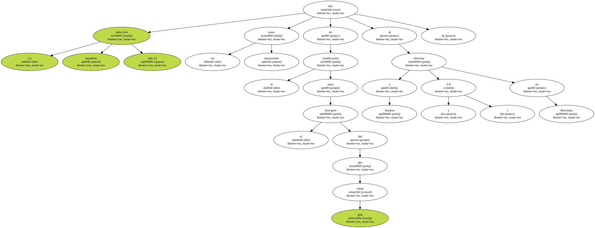
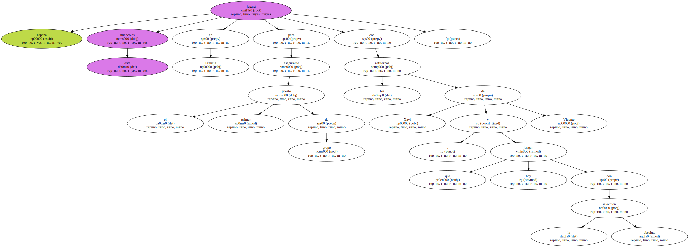

La selección española sub-21 dio un paso importante en la clasificación para el Europeo del año que viene al derrotar a Austria ( 2-0 ) en Burriana.
Dos goles del jugador del Atlético de Madrid Colsa al filo del descanso ( minutos 43 y 45 ) sentenciaron a los austriacos , la única selección capaz de derrotar a España en los cinco últimos años , incluido el partido de ida.

España jugará este miércoles en Francia para asegurarse el primer puesto de grupo con los refuerzos de Xavi y Vicente , que hoy juegan con la selección absoluta.
